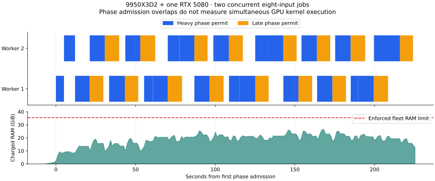

9 October 2026 · Measured Linux concurrency · Archived Apple Silicon comparisons
Two workers on the desktop RTX 5080
AMD Ryzen 9 9950X3D2: 16 cores, 32 threads, 192 MiB L3; 60.36 GiB Linux-usable RAM, no swap. One desktop RTX 5080 is present, reporting 16,303 MiB VRAM and a PCIe 5.0 ×16 link. The same GPU previously connected to the laptop over PCIe 4.0 ×4 through an ASMedia 2461 bridge. The host CPU and connection both changed, so these results do not isolate the benefit of either change.
Two eight-input jobs finished in 232.69 seconds, delivering 30.94 jobs/hour. This is 1.64× the single-worker control throughput, a 64.0% increase.
The successful comparison arms completed four jobs, 32 fresh recursive proofs, and four independent CPU root audits. The concurrent batch produced 16 fresh proofs and two audited roots. All memory-limit and OOM counters remained zero. The GPU was idle before admission, and each arm retained the same frozen binary, fixture, six Rayon threads per worker, compact storage, direct readback, and gathered query rows. Nsight hardware profiling was disabled for these throughput measurements.
Fresh desktop controls
| New desktop arm | Jobs | Elapsed | Jobs/hour | Peak charged RAM |
|---|
| Single before | 1 | 191.52 s | 18.80 | 19.75 GiB |
| Two concurrent | 2 | 232.69 s | 30.94 | 26.58 GiB |
| Single after | 1 | 190.19 s | 18.93 | 20.03 GiB |
The two single-worker controls bracket the concurrency run. Their elapsed times sum to 381.70 seconds for two jobs; the concurrent pair reduces that by 39.0%. Control-to-control variation is 0.70%. Timing includes worker launch, proving and independent CPU audit; binary builds and creation of the input wallet proofs are excluded.
Linux hardware comparison
| Linux system / layout | Workers | CPU threads / worker | GPUs | Batch elapsed | Jobs/hour |
|---|
| 9950X3D2 / one worker | 1 | 6 | 1 | 190.85 s | 18.86 |
| 9950X3D2 / two on desktop RTX 5080 | 2 | 6 | 1 | 232.69 s | 30.94 |
| Core Ultra 9 275HX / New-binary 1+1 | 2 | 6 | 2 | 427.46 s | 16.84 |
| Core Ultra 9 275HX / New-binary 2+1 | 3 | 6 | 2 | 551.01 s | 19.60 |
| Core Ultra 9 275HX / Four-worker 2+2 | 4 | 5 | 2 | 809.40 s | 17.79 |
The older host was the Core Ultra 9 275HX laptop, using its internal RTX 5080 Laptop GPU and the external desktop RTX 5080. “1+1”, “2+1” and “2+2” give workers on the laptop and desktop GPUs. These rows use the same prover binary as the new desktop. The older four-worker arm used five CPU threads per worker; other rows use six. One sampled batch per concurrent configuration does not establish sustained production throughput.
Apple Silicon results available in the archive
| Apple M5 Pro workers | CPU threads / worker | Batch elapsed | Eight-input jobs/hour | Fresh proofs / audits |
|---|
| 1 | 18 | 220.22 s | 16.35 | 7 / 1 |
| 3 | 6 | 355.82 s | 30.35 | 21 / 3 |
| 4 | 4 | 521.71 s | 27.60 | 28 / 4 |
| 5 | 3 | 676.56 s | 26.61 | 35 / 5 |
Apple workloads differ: each job aggregates eight existing inputs using seven fresh recursive proofs; the Linux typed job produces eight, including an extra finalizer. Apple uses Metal and different proof builds, CPU thread counts, launch staggering, and memory-phase controls. The table compares completed eight-input jobs, and does not isolate hardware speed. Apple three-worker and one-worker rows are earlier builds; four and five workers share a later proof build.
All listed Apple jobs passed CPU root audits, remained at normal memory pressure, and added no swap. Apple’s 64 GiB unified pool can support more worker allocations than the desktop’s separate 16 GiB GPU memory. Managed allowances are not total physical footprints, and Apple aggregate RSS can count shared mappings repeatedly. Older failed or different experimental GPU-quotient screens are excluded.
Concurrency, memory and scheduler behavior
| Desktop worker | Job elapsed | Proof execution | Heavy-permit wait | Late-permit wait | CPU audit |
|---|
| 1 | 215.59 s | 214.91 s | 18.41 s | 0.00 s | Passed |
| 2 | 231.16 s | 230.47 s | 26.73 s | 0.00 s | Passed |
The concurrent Linux batch reached a sampled fleet RAM peak of 26.58 GiB under its 35.50 GiB enforced limit. Sampled worker VRAM sums peaked at 8.64 GiB; these per-worker samples are taken a short time apart. Each worker reserves 6.25 GiB managed VRAM plus 0.5 GiB for its context. With a 1 GiB device headroom allowance, two workers reserve 14.5 GiB; three would require 21.25 GiB, exceeding this card’s capacity under the current policy.

The workers held heavy or late phase permits simultaneously for 118.81 seconds. This measures admitted phase overlap, not simultaneous GPU kernel execution.
At most one heavy phase, one late phase and one query phase were admitted. Scheduler waits and CPU work still limit scaling. This campaign tests the existing scheduler and memory controls; it does not establish the maximum throughput available from all 16 CPU cores or from altered memory policies.
Evidence
Measured comparison JSON · Archived Apple worker trials · Older Linux worker trials · Desktop GPU profile
The first two-worker attempt stopped when a new browser GPU process appeared, after 11 of 16 recursive proofs. That attempt is retained separately and excluded from every throughput figure. The retry started after GPU memory was released. The successful controls bracket the completed retry, with this interruption between the first control and retry.
GPU binary SHA-256: b9c5718915d09b6286960394af0087670c4394d1801c1653c0d33a9ea8d27f5d. Raw campaign: /home/access/code/lattica/.tools/worktrees/linux-memory-concurrency/lattica-prover-p3/target/desktop-concurrency-20261009/campaign-01. Controller sources, source hashes, exact invocations, phase logs, CPU audit logs, and memory telemetry are retained. Worker contexts and per-arm shared scratch were removed, and original fleet memory limits were restored.